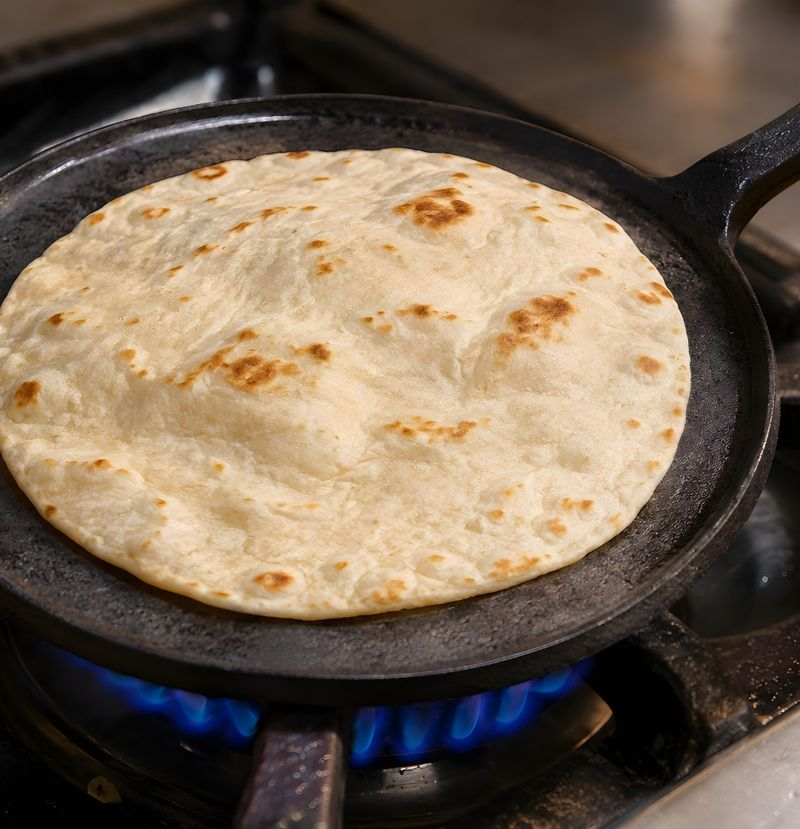

Introduction
From the Streets to the Stove
I’ve always loved food. Who doesn’t, right? My love for food not only stemmed from, you know, having to eat to stay alive, which I didn’t understand when I was younger, but it was also a crutch. It was something I hid behind, something that comforted me, and I needed a lot of comfort for whatever reason. It became like a drug, and it still affects me to this day, but I’ve learned to control some of it, not all of it, but most of it, and I love cooking for people.
I don’t know why, well actually, let me rephrase that, I do know why, I just don’t like the fact that I do it because of the reason. It all started when I was young. My father used to have his bum ass friends come over our house. Always people with nothing coming over our house, and my dad would feed them and let them get drunk off of his alcohol. My mother would have to sometimes get out of bed and go to the store late at night to get my father and his freeloading friends more beer.
I’m not upset by it any longer. I just like calling my father’s so-called friends back then “funky ass friends,” because that’s what they were. Anyway, they would eat all the food, drink all my father’s beer and we didn’t have shit, literally, didn’t have anything but he would give it to them. I understand it now, I don’t agree with the way he did it because I would never do that. I would never do that to my family, but I do feed people when they come over. I get enjoyment out of it.
That’s what I got from it and I still do it. Watching people eat, I don’t care if it’s just a simple egg and a tortilla with chorizo or a waffle, I love it. And don’t get me wrong, I’m not saying I sit at the table and literally watch them eat, I get the enjoyment out of them enjoying the food, so don’t twist it.
Since the first time I tasted my mom’s homemade tortillas and my aunt’s refried beans, I knew food wasn’t just about eating, it was about feeling. For me, food became a relationship, part survival, part comfort, and sometimes, part escape.
When I was about five or six, my oldest brother caught me eating raw bacon. I sort of remember it, but there’s another part of me that probably doesn’t want to. Even the thought of it now makes me sick. Why would my parents let that happen? Maybe they didn’t know. But if my brother knew, I’m pretty sure they did too. I never got in trouble for it, though. Just another weird food memory stuck somewhere between innocence and hunger. I also used to eat butter straight out of the fridge. Don’t judge me, I still like butter. I just don’t eat it like it’s a snack anymore.
My relationship with food goes way back. It wasn’t always good. I was a chubby kid, a fat teenager, and then in my late teens I started losing weight. Then I went to the joint. Came out built up, decent body, looking pretty good, but still stupid in a lot of ways.
Inside, food became something else. You learn to make something out of nothing. Creativity mixed with hunger. That’s where I learned to make my first real “spreads.” And I’m not going to lie, they were damn good. When I got out, I showed my family how to make them, and to this day my nieces and nephews still bring them up. “Uncle Sonny, make that jailhouse spread again!”
Now, I eat healthier. Not perfect, but better. Doesn’t mean I forgot where I came from, just means I’ve grown. So with this cookbook, I’m giving you a taste of all those years, the food that got me through the good times and the bad, the meals that kept me grounded, and the ones that reminded me of home. This isn’t some fancy chef’s cookbook. These are real recipes, born from love, struggle, and the kind of kitchens that never had measuring cups, just memories and taste. Sit back, enjoy, and try them out. Every recipe here has a story, and every story has a little bit of Chicano soul and street flavor.
If you’re reading this book, then you’re one of my people now. The only difference is, we just haven’t met yet.
S. Ramirez
Homemade Tortillas
Always made with Love

Story Behind the Plate
When it came to homemade tortillas, nobody made them better than my mother. There is nothing like waking up to the smell of tortillas being made on the comal. It’s as if the scent gets into your nostrils and lifts you out of bed and guides you down the hall to the kitchen with the aroma, and when you get there, my mother or your mother, or your father, or somebody, besides you, because you’re not in there making tortillas, is rolling out those tortillas faster than you could count almost.
You go into the refrigerator, grab that stick of butter, or back then what we had was the welfare butter. Oh, how I loved that butter. Talk about the best butter there was, but I digress.
I would grab a plate, then wait for the next tortilla to be ready off the comal, then snatch it up. I’ll put that hot tortilla on the plate, grab the butter, peel the wrapping back, then put it on top of the tortilla while I’m going around in small circles covering the whole tortilla making sure everything is buttery and watch it melt into savory goodness.
I would pick the tortilla up and fold it in half and then fold the half in half, and there you had it. You just eat it that way and it was the best thing in the world. Hopefully you and yours will wake up the same way one day.
Makes 12 to 14 tortillas · Prep 25 min · Cook 20 min
Ingredients
- 3 cups all-purpose flour
- 2 teaspoons baking powder
- 1 1/2 teaspoons salt
- 1/3 cup of oil (my mother used to use lard, or how we said it, manteca)
- 1 cup hot water
Directions
- In a bowl, combine the flour, baking powder, and salt.
- Add the oil (or manteca) and mix well.
- Pour in the hot water and stir until it starts to come together into a dough.
- Put the dough on a floured counter and knead it with your hands for a minute or two, until it’s smooth.
- Put it back in the bowl, cover it with a damp towel, and let it rest for 10 minutes.
- Pull the dough into 12 to 14 pieces and roll each one into a ball.
- Roll each ball out with a rolling pin into a circle about 8 inches across.
- Heat a comal or a skillet over medium-high.
- Cook each tortilla until little bubbles show up on top, about 30 seconds to a minute. Flip it and cook the other side for about 30 seconds, until it has a few golden spots.
- Stack them on a plate under a towel so they stay warm while you cook the rest.
Sonny’s Notes
Nowadays my mother doesn’t really make tortillas for us anymore. It’s probably because we don’t live with her, but she just stopped, and I asked her one day, “Ma, why don’t you make tortillas anymore?”
She said, “After making them for you boys all those years, I’m done.”
I said, “What about your grandkids? You don’t make tortillas for them?”
To which she replied, “I’ll teach them how.”
I thought about that for a second, then I asked, “Why didn’t you teach us how to make them?”
She said, “You know how to make them.”
“Yeah, because I learned on my own. I stole your recipe, so to speak.”
She said, “You didn’t steal my recipe. I gave it to you.”
“First of all, you told me the ingredients like every other mother in the world does back in the days, you said put this much, put that much, you never write anything down. I perfected it.”
She looks at me and goes, “Uh, you’re too much.”